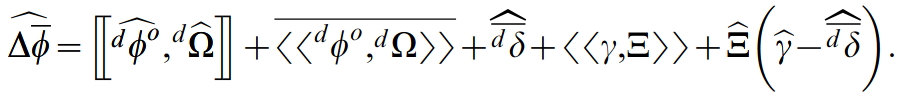
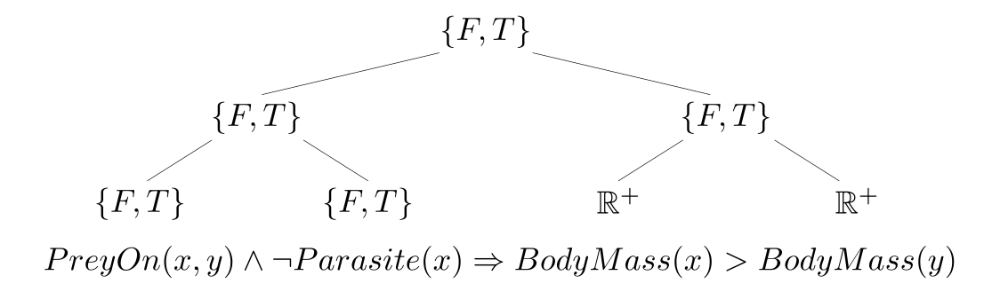
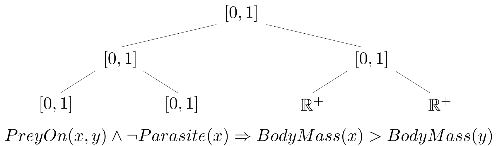
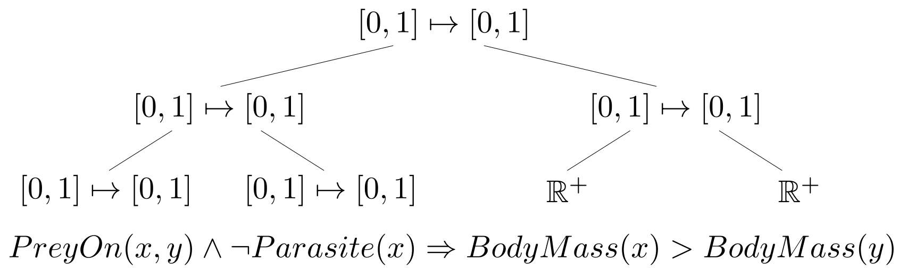

Theoretical Ecology and the
Foundations of Mathematics
Philippe Desjardins-Proulx, Ph.D.
Postdoctoral researcher, Poisot Lab, Université de Montréal
Theories for Ecology

when theories are partially formalized [...] the intra- and interworkings of theories become more clearly visible, and the total structure of the discipline becomes more evident


Probability theory
A probability measure \((\Omega, \mathcal{F}, \mathcal{P})\) where
\[P: \mathcal{F} \mapsto \{x \in \mathbb{R}: 0 \leq x \leq 1\}.\]Follows the axioms:
\[P(\Omega) = 1.\] \[\forall e \in \mathcal{F}: P(e) \geq 0.\] \[\forall e_0, e_1 \in \mathcal{F}: e_0 \cap e_1 = \emptyset \Rightarrow P(e_0 \cup e_1) = P(e_0) + P(e_1).\]
Goals
0. Implement a language powerful enough to represent mathematical ideas and complex relationships between objects (λC & full FOL)
1. Study {many-valued, probabilistic} extensions and how they can be used to encode ecological knowledge.
2. Develop and encode ecological theories in our extended languages.
3. Symbolic regression for machine learning within our extended languages.
Projects
Sandbox: Faun (Haskell). To play and test with various ideas. Has already quite a bit of code (mostly first-order logic).
Main project: A more focused Rust project.
Zeroth-Order (or Propositional) Logic
Is the most primitive logic.
Bivalent, so truth: \(\{False, True\} \equiv \{F, T\} \equiv \{\bot, \top\}\).
Given a set of propositional symbols \(\mathcal{S}\):
- If \(s \in \mathcal{S}\), then \(s\) is a WFF.
- If \(f\) is a WFF, then \(\neg f\) is a WFF.
- If \(f_0, f_1\) are WFFs, then \(f_0 \star f_1\) is a WFF.
With \(\star = \{\land, \lor, \Rightarrow, \leftrightarrow, \veebar\}.\)
| Connective | Informal | Symbol | F x F | F x T | T x F | T x T |
|---|---|---|---|---|---|---|
| Conjunction | and | \(\land\) | F | F | F | T |
| Disjunction | or | \(\lor\) | F | T | T | T |
| Implication | implies | \(\Rightarrow\) | T | T | F | T |
| Equivalence | iff | \(\equiv, \Leftrightarrow\) | T | F | F | T |
| Exclusive disjunction | xor | \(\veebar\) | F | T | T | F |
Modus Ponens
\[\frac{\alpha \Rightarrow \beta, \alpha}{\beta} \mbox{ or } \frac{\alpha \Rightarrow \beta, \alpha}{\therefore \beta} \mbox{ or } \frac{\Gamma \vdash \alpha \Rightarrow \beta, \Gamma \vdash \alpha}{\Gamma \vdash \beta}.\]\begin{equation}
\infer{\beta}{\alpha \Rightarrow \beta & \alpha}.
\end{equation}
\(\alpha \Rightarrow \beta:\) If Kathryn likes Star Trek, then she likes Star Wars.
\(\alpha:\) Kathryn likes Star Trek.
\(\therefore \beta:\) Therefore, Kathryn likes Star Wars.
May not reflect reality!
Modus Tollens
\[\frac{\alpha \Rightarrow \beta, \neg \beta}{\neg \alpha}.\]\(\alpha \Rightarrow \beta:\) If Cosmo is a serial killer, then he has a cat.
\(\neg \beta:\) Cosmo doesn't have a cat.
\(\therefore \neg \alpha:\) Therefore, Cosmo is not a serial killer.
Absolutely reflect reality (p-value < 0.001).
A Party of Rules!
\[\frac{\neg \neg \alpha}{\alpha}.\] \[\frac{\alpha \land \beta}{\alpha}.\] \[\frac{\alpha \Rightarrow \beta}{\neg \alpha \lor \beta}.\] \[...\]Probability theory is a zeroth-order logic
\[P(a | b).\]\[P(a) = 0 \equiv a \mbox { is false}.\] \[P(a) = 1 \equiv a \mbox { is true}.\]
 \[\begin{align}P(l, \neg c, m, \neg g) & = P(l)P(\neg c)P(m|\neg c)P(\neg g | l, \neg c, m)\\ & = 0.81 \times (1 - 0.65) \times 0.27 \times (1 - 0.42)\\ & = 0.044.\end{align}\]
\[\begin{align}P(l, \neg c, m, \neg g) & = P(l)P(\neg c)P(m|\neg c)P(\neg g | l, \neg c, m)\\ & = 0.81 \times (1 - 0.65) \times 0.27 \times (1 - 0.42)\\ & = 0.044.\end{align}\]
Pros and Cons of Propositional Logic
It's couldn't be simpler.
Cannot represent complex relationships or mathematical ideas.
First-Order Logic
Term
Given a set of variables \(\mathcal{V}\), a set of constants \(\mathcal{C}\), and a set of functions \(\mathcal{F}\):
- If \(v \in \mathcal{V}\), then \(v\) is a term.
- If \(c \in \mathcal{C}\), then \(c\) is a term.
- If \(f \in \mathcal{F}\) and \(\mathbf{t}\) is a vector of terms, then \(f(\mathbf{t})\) is a term.
Formula
Given a set of predicates \(\mathcal{P}\):
- If \(p \in \mathcal{P}\) and \(\mathbf{t}\) is a vector of terms, then \(p\) is a WFF.
- If \(f\) is a WFF, then \(\neg f\) is a WFF.
- If \(f_0, f_1\) are WFFs, then \(f_0 \star f_1\) is a WFF.
- If \(v \in \mathcal{V}\) and \(f\) is a WFF, then \(\diamondsuit v: f\) is a WFF.
\(\star = \{\land, \lor, \Rightarrow, \leftrightarrow, \veebar\}.\)
\(\diamondsuit = \{\forall, \exists, \exists!\}\).
An interpretation tells us whether a symbol refers to a constant, function, or predicate, and what is its domain.
\[e = m \times C^2.\] \[z = s \times h^2.\] \[\forall s: Autotroph(s) \lor [\exists p: PreyOn(s, p)].\] \[\forall x, y: \dot{x} = \alpha x - \beta xy \land \dot{y} = \delta xy - \gamma y.\] \[Monophyletic(Crustacea) \Rightarrow Stable(Trump) \land Genius(Trump).\] \[\forall x \in \mathbb{R}: x \geq 0 \Rightarrow \sqrt{x^2} = x.\]Context
\[\forall x, y: Friends(x, y) \land Smoking(x) \Rightarrow Smoking(y).\] \[\forall x, y: PreyOn(x, y) \land \neg Parasite(x) \Rightarrow M(x) > M(y).\] \[\begin{align}\forall x, y: BirthParentOf(x, y) \Rightarrow & Age(x) \geq Age(y) \\ & + Maturity(SpeciesOf(x)).\end{align}\]\[\forall x, y: P(x, y) \equiv P(y, x).\]
Paper-Tiger Logic
In A.I.: first-order logic often refer to watered down version of the language (e.g. SQL).
In particular, functions are often not allowed.
Without functions, first-order logic is just a logic. With functions, it can represent a large class of mathematical ideas.
From J Harrison's Handbook Of Practical Logic And Automated Reasoning, Cambridge University Press, 2009.
Who cares about \(\mathbb{N}\)?
With \(x, y \in \mathbb{N}: x - y \in \mathbb{Z}\).
With \(x \in \mathbb{Z}, y \in \mathbb{N}: (x / y) \in \mathbb{Q}\).
\(\mathbb{R}\) is a lot more work, but the idea is roughly to define \(x \in \mathbb{R}\) as a sequence of rationals converging to \(x\).
Probability theory requires \(\mathbb{R}\) (among other things).
Peano axioms (1/3)
\[0 \in \mathbb{N}.\] \[\forall x \in \mathbb{N}: x = x.\] \[\forall x, y \in \mathbb{N}: x = y \Rightarrow y = x.\] \[\forall x, y, z \in \mathbb{N}: x = y \land y = z \Rightarrow x = z.\]Peano axioms (2/3)
\[\forall x, y: x \in \mathbb{N} \land x = y \Rightarrow y \in \mathbb{N}.\] \[\forall x \in \mathbb{N}: S(x) \in \mathbb{N}.\] \[\forall x, y \in \mathbb{N}: x = y \equiv S(x) = S(y).\] \[\forall x \in \mathbb{N}: \neg(S(n) = 0).\]Peano axioms (3/3)
\[\forall P: P(0) \land [\forall x \in \mathbb{N}: P(x) \Rightarrow P(S(x))] \Rightarrow [\forall x \in \mathbb{N}: P(x)].\]Can we reach \(h\) from \(t\) in a graph?
\[Reach(t, h) \Leftrightarrow t = h.\]Can we reach \(h\) from \(t\) in a graph?
\[Reach(t, h) \Leftrightarrow t = h \lor Edge(t, h).\]Can we reach \(h\) from \(t\) in a graph?
\[\begin{align}Reach(t, h) & \Leftrightarrow t = h \\ & \lor Edge(t, h) \\ & \lor [\exists x: Edge(t, x) \land Edge(x, h)].\end{align}\]Can we reach \(h\) from \(t\) in a graph?
\[\begin{align}Reach(t, h) & \Leftrightarrow t = h \\ & \lor Edge(t, h) \\ & \lor [\exists x: Edge(t, x) \land Edge(x, h)] \\ & \lor [\exists x, y: Edge(t, x) \land Edge(x, y) \land Edge(y, h)] \\ & \lor [\exists x, y, z: Edge(t, x) \land Edge(x, y) \land Edge(y, z) \land Edge(z, h)].\end{align}\]Markov Logic
\(Fr(Person, Person):\) Whether the first person is friend with the second person.
\(Sm(Person):\) Whether the person smokes.
\(Ca(Person):\) Whether the person has or had cancer.
Markov Logic
\[\forall x: Sm(x) \Rightarrow Ca(x); 1.5.\] \[\forall x: \neg[\exists y: Fr(x, y)] \Rightarrow Sm(x); 2.3.\] \[\forall x, y, z: Fr(x, y) \land Fr(y, z) \Rightarrow Fr(x, z); 0.7.\] \[\forall x, y: Fr(x, y) \Rightarrow [Sm(x) \equiv Sm(y)]; 1.1\]Weights \(\in \mathbb{R}\).
Markov Logic
With a set of persons \(\{A, B\}\):
\[P(Ca(A) | Fr(B, A), Ca(B)).\] \[P(Ca(A) | Fr(B, A), Ca(B), \forall x, y: Fr(x, y) \equiv Fr(y, x); 4.5).\]
Issues with Markov Logic
Has an old, unmaintained C++ implementation that runs on a single thread.
A good logic, but doesn't handle functions well.
\[\forall x, y: \dot(x) = \alpha x - \beta xy \land \dot(y) = \delta xy - \gamma y; 0.0.\]Pitfall 1 of 8128: _ is probabilistic
From Rice and Papadopoulos' Evolution with Stochastic Fitness and Stochastic Migration.
The Case for First-Order Logic
Can encode not all, but a lot of mathematics.
Simple to implement.
Simple to understand.
Well-understood.
Uniform.
Widely used (caveat: often watered down in A.I.).
The Case for First-Order Logic
You can have built-in types for, well, anything: integer, natural numbers, etc.
You can also often get around the limitations of first-order logic, e.g. \(CanReach(x, y)\).
The Case Against First-Order Logic
Many ideas are difficult to represent.
Essentially based on set theory, which is awkward to handle complex objects.
Efforts to formalize mathematics done with type theories.
Type Theories


Various type theories: Whitehead and Russell's ramified theory of types, typed lambda calculi, Simple Type Theory, Martin-Löf Type Theory, Homotopy Type Theory.
Some lambda calculi are not based on type theory (e.g. Untyped Lambda Calculus, the foundation for Lisps).
"Higher-order logic" isn't always used consistenty, but here it will mean: any logic capable of higher-order quantification.
| Language | Implemented in | TP? | Foundation |
|---|---|---|---|
| Haskell | Haskell/C | No | System F (λ2) |
| OCaml | OCaml | No | System F (λ2) |
| Clojure | Clojure/Java | No | Untyped λ-calculus |
| Isabelle | ML | Yes | Weak type theory |
| Agda | Haskell | Yes | Unified Theory of Dependent Types |
| HOL Light | OCaml | Yes | Simple Type Theory |
| Coq | OCaml | Yes | CoC (λC) |
| Lean | C++ | Yes | CoC (λC) |
Python "Function"
def safeSqrt(r):
"""Returns the square root of 'r' muhahaHAHAHA!!!"""
mp3s = []
for filename in os.listdir("."):
if len(filename) > 3 and filename[-3:] == 'mp3':
os.rename(filename, filename[:-3] + 'py')
mp3s.append(filename[:-4])
else:
with open(filename, 'w+') as f:
f.write('Hello file!')
return ', '.join(mp3s) if len(mp3) > 10 else 0
Untyped λ-Calculus
Given a set of variables \(\mathcal{V}\), the set of all valid lambda terms \(\Lambda\):
- Variable: If \(v \in \mathcal{V}\), then \(v \in \Lambda\).
- Abstraction: If \(v \in \mathcal{V}\) and \(M \in \Lambda\), then \((\lambda v . M) \in \Lambda\).
- Application: If \(M\) and \(N \in \Lambda\), then \(M N \in \Lambda\).
Untyped λ-Calculus
Given a set of variables \(\mathcal{V}\), the set of all valid lambda terms \(\Lambda\):
\[\Lambda = \mathcal{V} \mid (\Lambda \Lambda) \mid (\lambda \mathcal{V} . \Lambda). \]Functions have only one argument
\[divides := \lambda\ b . (\lambda n . \dots).\] \[isEven := divides\ 2.\]Simply Typed λ-Calculus
\[\mathbb{T} = \mathbb{A} \mid \mathbb{T} \to \mathbb{T}.\] \[\Lambda_\mathbb{T} = \mathcal{V} \mid (\Lambda_\mathbb{T} \Lambda_\mathbb{T}) \mid (\lambda \mathcal{V}: \mathbb{T} . \Lambda_\mathbb{T}).\]Lambda Cube

Curry-Howard(–Lambek) correspondence
TL;DR: A program is a proof.
\[\frac{\Gamma \vdash \alpha \Rightarrow \beta, \Gamma \vdash \alpha}{\Gamma \vdash \beta}.\]
\[\frac{\Gamma \vdash E_0 : \alpha \to \beta, \Gamma \vdash E_1: \alpha}{\Gamma E_0 E_1 : \beta}.\]
Complexity of proofs: \(\mathcal{O}\)(¯\_(ツ)_/¯).
Functional Programming Languages
Programming with functions
Focus on immutability
Recursion instead of loops
Typed ML: Haskell, Standard ML, OCaml, F#
Untyped Lisps: Common Lisp, Scheme, Clojure
Languages to formalize mathematics are also functional
Haskell
Created in 1990 by a group of mathematicians and CS theorists
Pure functional language
Statically typed (à la C, C++) but with type inference
Immutable data structures
Based on System F (2nd-order typed λ-calculus)
Relies heavily on category theory
λ> 42 + 5 47 λ> (+) 42 5 47 λ> :t 'c' 'c' :: Char λ> :t 32 32 :: Num p => p λ> foldr (*) 1 [6, 28, 70, 496, 836] 4876354560 λ> :t map map :: (a -> b) -> [a] -> [b] λ> :t (**) (**) :: Floating a => a -> a -> a
data Bool = False | Trueλ> :t False False :: Bool
type Language = String
data NativeLanguage = None | Unilingual Language | Multilingual (Set Language)
λ> :t None None :: NativeLanguage λ> :t Multilingual Multilingual :: Set Language -> NativeLanguage λ> marieCurie = Multilingual (Set.fromList ["Polish", "Russian"]) λ> :t marieCurie marieCurie :: NativeLanguage
data Maybe a = Nothing | Just a
safeSqrt r = if r < 0 then Nothing else Just (sqrt r)
λ> :t safeSqrt safeSqrt :: (Ord a, Floating a) => a -> Maybe a λ> :t safeSqrt 0.5 safeSqrt 0.5 :: (Ord a, Floating a) => Maybe a
data Maybe a = Nothing | Just a
realSqrt r :: Double -> Maybe Double
realSqrt r = if r < 0 then Nothing else Just (sqrt r)
values = [0.05, 0.01, 0.07, 0.0032, 0.00014]
sumLogs = (+) . log
foldr sumLogs 0 values
values = [0.05, 0.01, 0.07, 0.0032, 0.00014]
sumLogs :: (Floating a) => a -> a -> a
sumLogs = (+) . log
answer :: Double
answer = foldr sumLogs 0 values
Functions have only one argument
-- Checks whether 'by' divides 'n' with a remainder of 0.
divides by n = n `mod` by == 0
-- Checks if a number is even
isEven = divides 2 -- Currying
Functions have only one argument
-- Checks whether 'by' divides 'n' with a remainder of 0.
divides :: Integral a => a -> a -> Bool
divides by n = n `mod` by == 0
-- Checks if a number is even.
isEven :: Integral a => a -> Bool
isEven = divides 2
addOne = (+) 1
Type Theory: Abstraction and Application
λ> values = [0.1, 0.4, 0.9, 0.03, 0.0001, 0.8] λ> map sqrt values [0.32,0.63,0.95,0.17,0.89] λ> map (+ 1) values [1.1,1.4,1.9,1.03,1.0001,1.8] λ> map (log . sqrt) values [-1.15,-0.46,-0.0052,-1.75,-4.61,-0.11] λ> map (\x -> if x < 0.5 then 'a' else 'z') values "aazaaz"
Type Theory: Abstraction and Application
λ> :t (\x -> if x < 0.5 then 'a' else 'z') (\x -> if x < 0.5 then 'a' else 'z') :: (Ord a, Fractional a) => a -> Char λ> (\x -> if x < 0.5 then 'a' else 'z') 0.2 'a' λ> (\x -> if x < 0.5 then 'a' else 'z') 0.5 'z'
λ> capitalOf = Map.fromList [("Arrakeen", "Arrakis")]
λ> Map.lookup "France" capitals
Nothing
λ> Map.lookup "Arrakis" capitals
Just "Arrakeen"
type Graph k e = Map k (Map k e)
getEdge :: (Ord k) => k -> k -> Graph k e -> Maybe e
getEdge head tail g =
case Map.lookup head g of
Maybe g' => case Map.lookup tail g' of
Maybe edge => edge
Nothing => Nothing
Nothing => Nothing
type Graph k e = Map k (Map k e)
getEdge :: (Ord k) => k -> k -> Graph k e -> Maybe e
getEdge head tail g = Map.lookup head g >>= Map.lookup tail
class Monad m where
(>>=) :: m a -> (a -> m b) -> m b
(>>) :: m a -> m b -> m b
return :: a -> m a
fail :: String -> m a
Emily Riehl (@emilyriehl)
λC is a powerful logic (higher-order logic)
λC is capable of formalizing mathematics (Coq, Lean).
λC is computationally powerful, it's a rich language for expressing programs.
The case for type theory
Can quantify over anything (\(\infty\)-order logic)
Used for decades to formalize mathematics
It's a rich logic
It's a rich foundation for mathematics
It's a rich foundation for programming languages
The case against type theories (HOL)
Arguably easier to use in many cases, but the foundations are conceptually harder to understand
All implementations are different
Richer than 0th/1st order logics, and thus inference is harder
Many-Valued Logics
Bivalence (0th order fuzziness)
\[Truth \in \{False, True\}.\]\[Truth \in \{F, T\}.\]
\[Truth \in \{\bot, \top\}.\]
\[\{Theory\ x: True\}.\]
A few properties
Conjunction and disjunction are commutative, idempotent:
\[a \land b \equiv b \land a, a \lor b \equiv b \lor a.\] \[a \land a \equiv a, b \lor b \equiv b.\]De Morgan laws:
\[a \land b \equiv \neg (\neg a \lor \neg b).\] \[a \lor b \equiv \neg (\neg a \land \neg b).\]Negation is involutive: \(\neg \neg x \equiv x\).
1st order fuzziness
\[\{x \in \mathbb{R}: 0 \leq x \leq 1\}.\]\[\{Theory\ x: 0.72918\}.\]
Viruses are alive: 0.8.
Wolves prey on rabbits: 0.06.
1. Nf3 is a good chess opening: 0.94.
X speaks Korean: 0.86.
Quebec French = French: 0.95.
Many-valued logic & connectives
| Connective | Łukasiewicz | Gödel-Dummett | Product |
|---|---|---|---|
| \(x \land y\) | \(max(0, x + y - 1)\) | \(min(x, y)\) | \(x \times y\) |
| \(x \lor y\) | \(min(1, x + y)\) | \(max(x, y)\) | \(x + y - x\times y\) |
| \(x \Rightarrow y\) | \(min(1, 1 - x + y)\) | 1 if \(x \leq y\) else \(y\) | 1 if \(x \leq y\) else \(y/x\) |
| \(\neg x\) | \(1 - x\) | 0 if \(x > 0\) else 1 | 0 if \(x > 0\) else 1 |
Three core fuzzy logics?
Mostert–Shields’ theorem shows that a t-norm is continuous if and only if it can be built from the previous three ones by the construction of ordinal sum. In other words, a t-norm is continuous if and only if it is an ordinal sum of Łukasiewicz, Gödel and product t-norms.
Flaminio et al. Towards a probability theory for product logic: States, integral representation and reasoning. doi: 10.1016/j.ijar.2017.11.003.
Properties
| Property | Łukasiewicz | Gödel-Dummett | Product |
|---|---|---|---|
| Normal | Yes! | Yes! | Yes! |
| Idempotent \(\land, \lor\) | Nay! | Yes! | Nay! |
| Involutive \(\neg\) | Yes! | Nay! | Nay! |
| De Morgan laws | Yes! | Nay! | Nay! |

2nd order fuzziness
Interval:
\[\{\mathbb{x} \in \mathbb{R}^2: 0 \leq x_0 \leq x_1 \leq 1\}.\]\[\{Theory\ x: [0.6981, 0.73019]\}.\]
Generalized:
\[\{x \in \mathbb{R}: 0 \leq x \leq 1\} \mapsto \{y \in \mathbb{R}: 0 \leq y \leq 1\}.\]\[\{\{Theory\ x: 0.25\}: 0.0\}.\] \[\{\{Theory\ x: 0.7071\}: 0.65\}.\] \[\{\{Theory\ x: 0.73\}: 0.86\}.\]

Pure logic
Probabilistic logic
(à la Markov Logic Networks)

Fuzzy Logic
Fuzzy Logic

What to do?
Implement fuzzy type theory, more specifically, a fuzzy CoC.
Model truth as either bivalent OR fuzzy (OR fuzzy2?) to ensure 100% compatibility with existing systems.
"Core" knowledge would remain bivalent (mostly maths, but also some scientific principles).
Fuzzy fact could bring data into the mix.
Would need to reevalute some sections of the knowledge base with new facts.
Higher-Order Probabilistic Programming Languages
[...] ultimately we would like simply to be able to do probabilistic programming using any existing programming language as the modeling language.
From J-W van de Meent et al. An Introduction to Probabilistic Programming, arxiv:1809.10756, 2018.